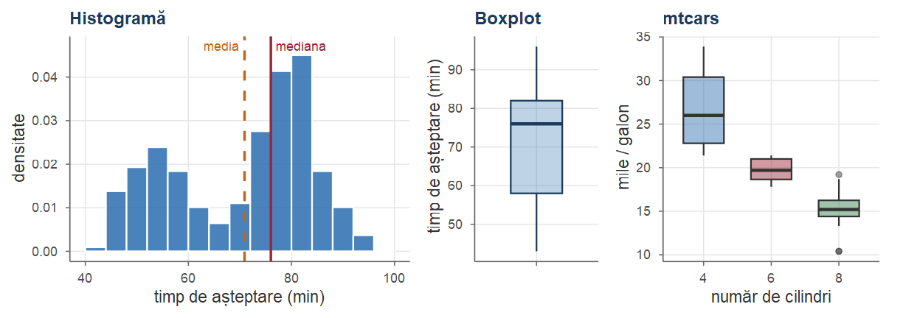
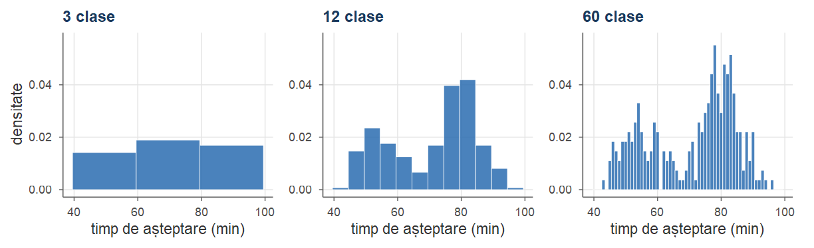
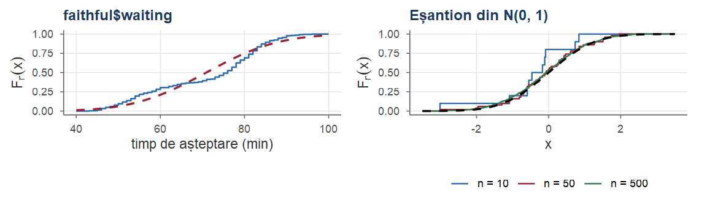
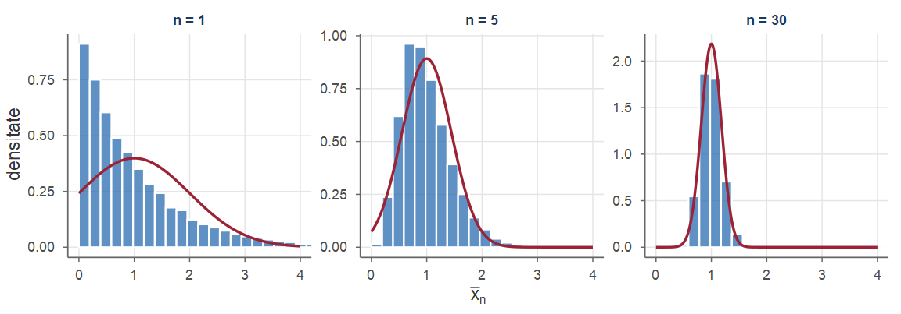
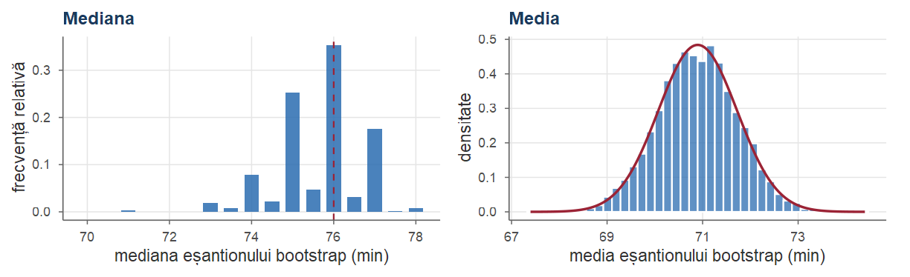
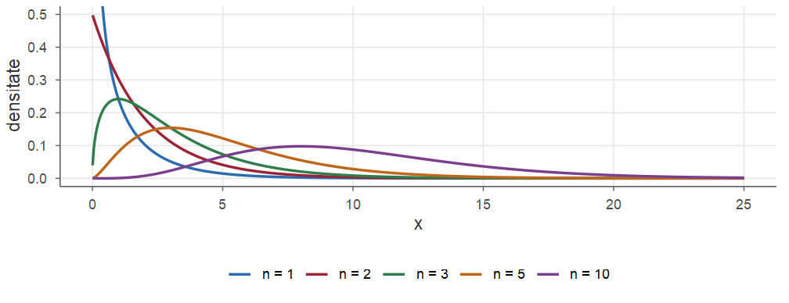
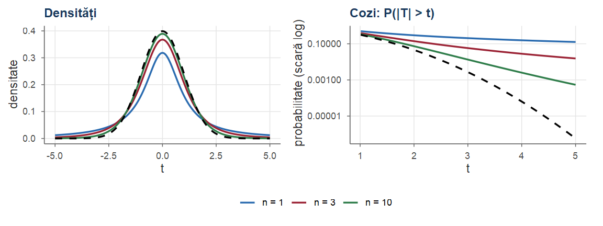
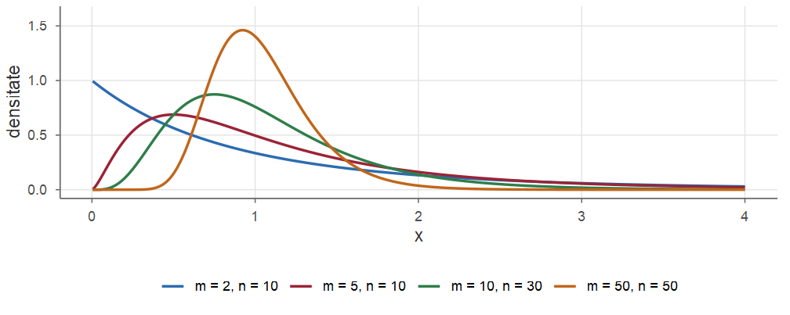
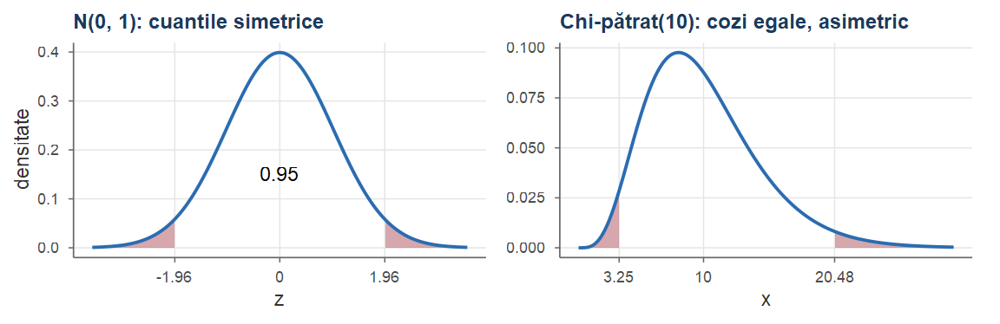
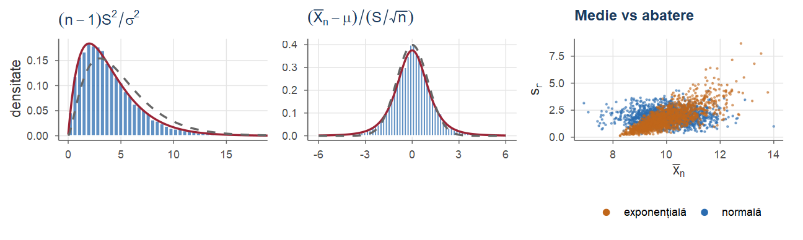

#> probabilitate estimare
#> 0.1979 0.2500Cursul 8. Introducere în statistica inferențială
Probabilități și Statistică · Cursul 8
Alexandru Amărioarei
Universitatea din București · Facultatea de Matematică și Informatică · 2026–2027
Planul cursului
| Partea | Conținut |
|---|---|
| I | Probabilități vs statistică; populație, eșantion, statistică; statistică descriptivă |
| II | Repartiția mediei de selecție; metoda bootstrap; funcția Gamma; repartițiile \(\chi^2\) și Student |
| III | Repartiția Fisher; cuantile; teorema lui Fisher; două eșantioane |
| IV | Exerciții rezolvate; recapitulare |
Obiective. La finalul cursului studenții știu să:
- distingă parametru / statistică / valoare observată și să calculeze indicatori descriptivi;
- folosească repartițiile de eșantionare (\(\Norm\), \(\chi^2\), Student, Fisher) și cuantilele lor în R;
- enunțe și aplice teorema lui Fisher pentru eșantioane normale.
Recapitulare: teoreme limită (Cursul 7)
- Eșantion: \(X_1,\dots,X_n\) i.i.d.; \(\E[\Xbar]=\mu\), \(\Var(\Xbar)=\sigma^2/n\) (Propoziția 17 din Cursul 7).
- LNM: \(\Xbar\pto\mu\) și chiar \(\Xbar\asto\mu\) (Teoremele 18 din Cursul 7, 19 din Cursul 7).
- TLC: \(\dfrac{\Xbar-\mu}{\sigma/\sqrt n}\dto\Norm(0,1)\) (Teorema 20 din Cursul 7); \(\ \Xbar\approx\Norm(\mu,\sigma^2/n)\).
- Funcții continue păstrează convergența în probabilitate (Propoziția 15 din Cursul 7).
- Cebîșev: \(\PP(|\Xbar-\mu|\ge\varepsilon)\le\sigma^2/(n\varepsilon^2)\).
Recapitulare: repartiții (Cursurile 5–6)
- \(Z\sim\Norm(0,1)\): \(\PP(Z\le z)=\Phi(z)\); \(Z^2\) are densitatea \(\frac{1}{\sqrt{2\pi}}y^{-1/2}e^{-y/2}\), \(y>0\) (Exemplul 12 din Cursul 5).
- \(\GammaD(\alpha,\lambda)\): \(f(x)=\frac{\lambda^\alpha}{\Gamma(\alpha)}x^{\alpha-1}e^{-\lambda x}\), \(x>0\); \(\E=\alpha/\lambda\), \(\Var=\alpha/\lambda^2\); \(\GammaD(1,\lambda)=\Exp(\lambda)\).
- Sume independente: \(\GammaD(\alpha_1,\lambda)+\GammaD(\alpha_2,\lambda)=\GammaD(\alpha_1+\alpha_2,\lambda)\); sumă de normale independente = normală (Propoziția 43 din Cursul 6).
- Covarianța este biliniară; pentru vectori normali, necorelare \(\iff\) independență.
- Schimbarea de variabile pentru densități (iacobianul).
Partea I — Populație, eșantion, statistică descriptivă
Probabilități și statistică: două direcții
În probabilități modelul este cunoscut și ne întrebăm cum vor arăta datele; în statistică datele sunt cunoscute și ne întrebăm ce model (ce parametri) le-a produs.

Urna cu bile roșii și verzi
Exemplul 1 (Urna cu bile roșii și verzi)
O urnă conține bile roșii și verzi, proporția celor roșii fiind \(p\). Efectuăm \(n=20\) de extrageri cu întoarcere; \(X\) = numărul de bile roșii, \(X\sim\Bin(20,p)\).
Problema de probabilități. Dacă \(p=0.23\), care este probabilitatea de a obține exact 5 bile roșii? \[ \PP(X=5)=\binom{20}{5}(0.23)^5(0.77)^{15}\approx 0.1979 . \]
Problema de statistică. Am obținut 5 bile roșii. Ce putem spune despre \(p\)? Răspunsul natural: estimarea \(\hat p=5/20=0.25\).
Urna: întrebările statisticii
Estimarea \(\hat p=0.25\) ridică imediat întrebări noi, la care răspund cursurile următoare:
- Cât de precisă este această estimare? (Cursul 9)
- Există și alte estimări rezonabile? Cum le comparăm? (Cursurile 9–10)
- Putem da un interval în care \(p\) se află „cu mare încredere”? (Cursul 12)
- Datele contrazic afirmația „\(p=0.5\)”? (Cursul 13)
Toate aceste întrebări depind de repartiția de eșantionare a estimatorului — obiectul acestui curs.
Sondaj de opinie
Exemplul 2 (Sondaj de opinie)
Înaintea unor alegeri, un institut de sondare intervievează \(n=1\,000\) de persoane alese aleator; 412 intenționează să voteze cu candidatul A.
- Populația: toți alegătorii; parametrul de interes: proporția \(p\) a celor care votează cu A.
- Model: răspunsul persoanei \(i\) este \(X_i\sim\Bern(p)\) (\(X_i=1\) dacă votează cu A).
- Estimarea naturală: \(\hat p=\bar x_n=0.412\).
Întrebarea statistică: cât de departe de \(p\) poate fi \(0.412\)? LNM ne asigură că \(\Xbar\to p\), iar TLC permite cuantificarea erorii (aproximativ \(\pm 0.03\) cu probabilitate \(0.95\)).
Controlul calității
Exemplul 3 (Controlul calității)
O fabrică produce rezistori cu valoarea nominală de \(100\,\Omega\). Din cauza variațiilor procesului, valoarea reală a unui rezistor este o variabilă aleatoare \(X\), modelată de obicei ca \(X\sim\Norm(\mu,\sigma^2)\).
Inginerul de calitate extrage zilnic \(n=25\) de rezistori și le măsoară valorile. El dorește să știe:
- dacă procesul este centrat (\(\mu=100\));
- dacă dispersia \(\sigma\) nu a crescut peste o limită admisă.
Ambele întrebări privesc parametri necunoscuți ai populației și trebuie tranșate pe baza unui eșantion.
Înălțimea medie a studenților
Exemplul 4 (Înălțimea medie a studenților)
Dorim să aflăm înălțimea medie \(\mu\) a studenților unei universități cu \(20\,000\) de studenți. Alegem aleator \(n=50\) de studenți și calculăm media înălțimilor lor, de exemplu \(\bar x_n=174.3\) cm.
Dacă am repeta alegerea, am obține alți 50 de studenți și o altă medie. Media de selecție este deci o variabilă aleatoare, iar calitatea estimării depinde de repartiția ei: cu cât aceasta este mai concentrată în jurul lui \(\mu\), cu atât estimarea este mai bună.
Studiul acestor repartiții („de eșantionare”) este obiectul principal al cursului.
Populație și model statistic
O populație statistică este o mulțime (de obicei foarte mare) de indivizi asupra cărora studiem o caracteristică numerică. Valoarea caracteristicii pentru un individ ales la întâmplare este o variabilă aleatoare \(X\); repartiția ei = repartiția populației. Identificăm populația cu repartiția sa.
Definiția 1 (Model statistic parametric)
Un model statistic parametric este o familie de repartiții \(\mathcal{P}=\{F_\theta:\ \theta\in\Theta\}\), unde \(\Theta\subseteq\R^k\) este spațiul parametrilor. Presupunem că repartiția populației este \(F_\theta\) pentru o valoare \(\theta\in\Theta\) necunoscută, numită parametrul (adevărat) al populației. Notăm cu \(f(x;\theta)\) densitatea (cazul continuu) sau funcția de masă (cazul discret), iar cu \(\PP_\theta\), \(\E_\theta\), \(\Var_\theta\) probabilitățile, mediile, varianțele sub \(F_\theta\).
Modele statistice: exemple
- Sondajul (Exemplul 2): \(\{\Bern(p):p\in[0,1]\}\), parametru unidimensional \(\theta=p\).
- Controlul calității (Exemplul 3): \(\{\Norm(\mu,\sigma^2):\mu\in\R,\ \sigma>0\}\), parametru bidimensional \(\theta=(\mu,\sigma^2)\).
- Durate de viață: \(\{\Exp(\lambda):\lambda>0\}\); numere de apeluri: \(\{\Pois(\lambda):\lambda>0\}\).
Întrebare: în fiecare caz, ce înseamnă „parametrul adevărat”? Ce valori poate lua?
Eșantion aleator
Definiția 2 (Eșantion aleator)
Variabilele aleatoare \(X_1,X_2,\dots,X_n\) formează un eșantion aleator (eșantion statistic, selecție) de volum \(n\) din populația \(F_\theta\) dacă ele sunt
- independente și (ii) identic repartizate, fiecare având repartiția \(F_\theta\).
Pe scurt, \(X_1,\dots,X_n\overset{\iid}{\sim}F_\theta\). Valorile numerice \(x_1,\dots,x_n\) efectiv observate se numesc realizarea eșantionului.
- \(X_i\) (majuscule) = variabile aleatoare, înainte de colectare; \(x_i\) (litere mici) = numere, după colectare.
- Din independență, densitatea comună a eșantionului este \[ f(x_1,\dots,x_n;\theta)=\prod_{i=1}^n f(x_i;\theta). \]
Populații finite
Observație
Într-o populație finită de volum \(N\), alegerea a \(n\) indivizi fără întoarcere nu produce variabile independente (vezi repartiția hipergeometrică).
Totuși, dacă \(n\) este mic în raport cu \(N\) (practic \(n\le 0.05N\)), dependența este neglijabilă și modelul i.i.d. este o aproximare foarte bună. În continuare vom presupune întotdeauna că eșantionul este i.i.d.
Statistici și repartiții de eșantionare
Definiția 3 (Statistică)
O statistică este o variabilă aleatoare de forma \(T=g(X_1,\dots,X_n)\), unde \(g:\R^n\to\R^k\) este o funcție (măsurabilă) care nu depinde de parametrul necunoscut \(\theta\). Repartiția lui \(T\) se numește repartiția de eșantionare a statisticii \(T\).
- Condiția ca \(g\) să nu depindă de \(\theta\) este esențială: o statistică trebuie să poată fi calculată efectiv din date.
- Exemplu: dacă \(\mu\) este necunoscut, \(\sum_i (X_i-\mu)^2\) nu este o statistică; \(\sum_i(X_i-\Xbar)^2\) este.
Statistici uzuale
Definiția 4 (Statistici uzuale)
Fie \(X_1,\dots,X_n\) un eșantion aleator. Definim:
- media de selecție \(\Xbar=\frac1n\sum_{i=1}^n X_i\);
- varianța de selecție (corectată) \(S_n^2=\frac1{n-1}\sum_{i=1}^n\big(X_i-\Xbar\big)^2\), \(n\ge2\), și abaterea standard de selecție \(S_n=\sqrt{S_n^2}\);
- varianța de selecție necorectată \(\hat\sigma_n^2=\frac1n\sum_{i=1}^n\big(X_i-\Xbar\big)^2=\frac{n-1}{n}S_n^2\);
- momentele de selecție de ordin \(k\): \(\bar m_k=\frac1n\sum_{i=1}^n X_i^k\);
- statisticile de ordine \(X_{(1)}\le X_{(2)}\le\dots\le X_{(n)}\) (valorile ordonate crescător); \(X_{(1)}=\min_i X_i\), \(X_{(n)}=\max_i X_i\).
Statistici uzuale: observații
- Scriem simplu \(S^2\) în loc de \(S_n^2\) când nu există pericol de confuzie; valorile observate: \(\bar x_n\), \(s_n^2\) etc.
- Factorul \(\frac{1}{n-1}\) în \(S_n^2\): cu el \(\E[S_n^2]=\sigma^2\) (Cursul 9).
- În R:
mean(),var(),sd()calculează \(\bar x_n\), \(s_n^2\), \(s_n\) (cu factorul \(\frac1{n-1}\)!).
Descompunerea sumei pătratelor
Lema 5 (Descompunerea sumei pătratelor)
Pentru orice numere reale \(x_1,\dots,x_n\) și orice \(a\in\R\), \[ \sum_{i=1}^n (x_i-a)^2=\sum_{i=1}^n (x_i-\bar x_n)^2+n(\bar x_n-a)^2 . \] În particular \(\sum_i(x_i-\bar x_n)^2=\sum_i x_i^2-n\bar x_n^2\), iar \(a\mapsto\sum_i(x_i-a)^2\) este minimă pentru \(a=\bar x_n\).
Descompunerea sumei pătratelor: demonstrație
Demonstrație. Scriem \(x_i-a=(x_i-\bar x_n)+(\bar x_n-a)\) și ridicăm la pătrat: \[ \sum_{i=1}^n(x_i-a)^2=\sum_{i=1}^n(x_i-\bar x_n)^2+2(\bar x_n-a)\sum_{i=1}^n(x_i-\bar x_n)+n(\bar x_n-a)^2, \] iar termenul din mijloc este nul: \(\sum_i(x_i-\bar x_n)=n\bar x_n-n\bar x_n=0\). Pentru \(a=0\) obținem a doua formulă.■
Notații (1)
| Notație | Semnificație | în R |
|---|---|---|
| \(F_\theta\), \(f(x;\theta)\), \(\theta\in\Theta\) | repartiția populației, densitatea/funcția de masă, parametrul | |
| \(X_1,\dots,X_n\) | eșantion aleator (i.i.d.) de volum \(n\) | |
| \(x_1,\dots,x_n\) | valorile observate ale eșantionului | x |
| \(\Xbar\), \(\bar x_n\) | media de selecție | mean(x) |
| \(S_n^2\), \(s_n^2\) | varianța de selecție (factor \(\frac1{n-1}\)) | var(x) |
| \(\hat\sigma_n^2\) | varianța de selecție necorectată (factor \(\frac1n\)) | mean((x - mean(x))^2) |
| \(X_{(1)},\dots,X_{(n)}\) | statisticile de ordine | sort(x) |
Notații (2)
| Notație | Semnificație | în R |
|---|---|---|
| \(\hth_n\) | estimator al parametrului \(\theta\) | |
| \(\Bias(\hth)\), \(\MSE(\hth)\) | deplasarea \(\E[\hth]-\theta\), eroarea pătratică medie \(\E[(\hth-\theta)^2]\) | |
| \(z_\alpha\) | cuantila de ordin \(\alpha\) a lui \(\Norm(0,1)\): \(\Phi(z_\alpha)=\alpha\) | qnorm(alpha) |
| \(t_{n;\alpha}\) | cuantila de ordin \(\alpha\) a repartiției \(\Stud{n}\) | qt(alpha, n) |
| \(\chi^2_{n;\alpha}\) | cuantila de ordin \(\alpha\) a repartiției \(\chisq{n}\) | qchisq(alpha, n) |
| \(F_{m,n;\alpha}\) | cuantila de ordin \(\alpha\) a repartiției \(\Fish{m}{n}\) | qf(alpha, m, n) |
Toate cuantilele sunt cuantile inferioare, ca în R.
Convenția pentru cuantile
Atenție!
Multe manuale folosesc cuantile superioare (de exemplu \(z_{\alpha/2}\) cu \(\PP(Z>z_{\alpha/2})=\alpha/2\)). În acest curs folosim cuantile inferioare, în concordanță cu funcțiile R: valoarea \(1.96\) se scrie \[
z_{0.975}=z_{1-\alpha/2}\quad\text{pentru }\alpha=0.05,
\] și se obține cu qnorm(0.975). Atenție la această convenție când consultați alte surse!
Statistică descriptivă: indicatori numerici
Înainte de orice inferență, datele trebuie explorate (simetrie, asimetrie, valori aberante, bimodalitate). Pentru \(x_1,\dots,x_n\) cu valorile ordonate \(x_{(1)}\le\dots\le x_{(n)}\):
- poziție: media \(\bar x_n\) și mediana \(\tilde x\), egală cu \(x_{((n+1)/2)}\) pentru \(n\) impar și cu \(\frac12\big(x_{(n/2)}+x_{(n/2+1)}\big)\) pentru \(n\) par;
- împrăștiere: varianța \(s_n^2\), abaterea standard \(s_n\), amplitudinea \(x_{(n)}-x_{(1)}\), intervalul intercuartilic \(\mathrm{IQR}=q_{0.75}-q_{0.25}\);
- cuantilele empirice \(q_p\): valori care lasă la stânga aproximativ o fracțiune \(p\) din date; \(q_{0.25}\), \(q_{0.75}\) = cuartile, \(q_{0.5}\) = mediana.
Cuantile empirice (convenția R)
Convenția implicită din R (quantile(x, p), „tipul 7”): se calculează \(h=(n-1)p+1\) și se interpolează liniar între \(x_{(\lfloor h\rfloor)}\) și \(x_{(\lfloor h\rfloor+1)}\): \[
q_p=x_{(\lfloor h\rfloor)}+\big(h-\lfloor h\rfloor\big)\big(x_{(\lfloor h\rfloor+1)}-x_{(\lfloor h\rfloor)}\big).
\]
- Rezumatul celor cinci numere \(\big(x_{(1)},q_{0.25},\tilde x,q_{0.75},x_{(n)}\big)\) stă la baza diagramei boxplot.
Media versus mediana: robustețe
Media este sensibilă la valori extreme; mediana este robustă: modificarea unei singure observații, oricât de mult, schimbă mediana foarte puțin.
Old Faithful: rezumate numerice
Exemplul 5 (Erupțiile gheizerului Old Faithful)
Setul de date faithful din R conține \(n=272\) de observații ale gheizerului Old Faithful (Yellowstone): durata erupțiilor (eruptions, minute) și timpul de așteptare până la erupția următoare (waiting, minute). Rezumăm timpii de așteptare.
Histograma și boxplot-ul
Histograma: împărțim axa în clase \([a_{j-1},a_j)\) și desenăm deasupra fiecărei clase un dreptunghi cu aria egală cu frecvența relativă a observațiilor din clasă. Aria totală este \(1\): histograma este un estimator (grosier) al densității.
Boxplot („cutie cu mustăți”): cutie de la \(q_{0.25}\) la \(q_{0.75}\), cu o linie la mediană; mustățile se prelungesc până la cea mai extremă observație aflată la cel mult \(1.5\cdot\mathrm{IQR}\) de cutie; observațiile mai îndepărtate sunt marcate ca valori aberante (potențiale).
Rezumatul celor cinci numere (și media) pentru faithful$waiting:
Old Faithful și mtcars: grafice

Media (\(70.90\)) < mediana (\(76\)): repartiția este bimodală (grupuri în jur de 55 și 80 de minute) — un model normal nu este potrivit. Dreapta: mai mulți cilindri \(\Rightarrow\) consum mai mare.
Histograma ca estimare a densității
Definiția 6 (Histograma ca estimator al densității)
Fie \(B_1,\dots,B_K\) clase alăturate, de aceeași lățime \(h\), care acoperă toate observațiile, și \(\hat p_j\) proporția observațiilor din clasa \(B_j\). Histograma (normată) este \[ \hat f_h(x)=\frac{\hat p_j}{h}\quad\text{pentru }x\in B_j,\qquad\text{cu}\qquad \int_{\R}\hat f_h(x)\dd x=\sum_{j=1}^K h\cdot\frac{\hat p_j}{h}=1 . \]
- În R:
hist(x, freq = FALSE). Din LNM, \(\hat p_j\approx\PP(X\in B_j)=\int_{B_j}f(t)\dd t\approx f(x)\,h\), deci \(\hat f_h(x)\approx f(x)\). - \(h\) mare (clase puține): histograma netezește prea mult și ascunde forma repartiției.
- \(h\) mic (clase multe): puține observații în fiecare clasă; abaterea standard a înălțimii este \(\approx\sqrt{f(x)/(nh)}\) — vedem mai ales zgomot.
Câte clase alegem?

Aceleași date (faithful$waiting): cu 3 clase bimodalitatea dispare, cu 60 de clase domină zgomotul.
- Sturges: \(K=\lceil\log_2n\rceil+1\) (implicit în
hist); Freedman–Diaconis: \(h=2\cdot\mathrm{IQR}\cdot n^{-1/3}\) (breaks = "FD"); Scott: \(h=3.5\,s_n\,n^{-1/3}\) (breaks = "Scott").
Numărul de clase ales de date
Definiția 7 (Scorul de validare încrucișată al unei histograme)
Pentru o histogramă cu clase de lățime \(h\) și proporții \(\hat p_1,\dots,\hat p_K\), construită din \(n\) observații, scorul de validare încrucișată este \[ J(h)=\frac{2}{(n-1)h}-\frac{n+1}{(n-1)h}\sum_{j=1}^K\hat p_j^{\,2}. \] Dintre mai multe lățimi \(h\) o alegem pe cea pentru care \(J(h)\) este minim.
- \(J(h)\) estimează eroarea \(\int(\hat f_h(x)-f(x))^2\dd x\), mai puțin o constantă care nu depinde de \(h\).
- Ideea (leave-one-out): fiecare observație este lăsată, pe rând, deoparte, iar histograma construită din celelalte \(n-1\) este evaluată în ea.
- Valorile lui \(J\) pot fi negative: contează doar compararea lor.
Câte clase pentru Old Faithful?
Exemplul 6 (Câte clase pentru Old Faithful?)
Scorul \(J\) pentru \(K\) clase egale pe \([39.5,99.5]\) (lățimi \(h=60/K\) întregi) este minim pentru \(K=12\), adică pentru clase de 5 minute, ca la hist; \(K=15\) și \(K=20\) sunt aproape la fel de bune.
x <- faithful$waiting; n <- length(x)
scorJ <- function(K) { # K clase egale pe [39.5, 99.5]
h <- 60 / K # lățimea unei clase
p <- hist(x, seq(39.5, 99.5, by = h), plot = FALSE)$counts / n
2 / ((n - 1) * h) - (n + 1) / ((n - 1) * h) * sum(p^2)
}
K <- c(3, 4, 5, 6, 10, 12, 15, 20, 30, 60)
round(setNames(1000 * sapply(K, scorJ), K), 1) # 1000 J(h)#> 3 4 5 6 10 12 15 20 30 60
#> -16.7 -21.7 -22.6 -22.0 -23.8 -25.0 -24.1 -24.8 -23.2 -21.2Funcția de repartiție empirică
Definiția 8 (Funcția de repartiție empirică)
Fie \(X_1,\dots,X_n\) un eșantion aleator. Funcția de repartiție empirică este \[ F_n(x)=\frac1n\sum_{i=1}^n \Ind_{\{X_i\le x\}}=\frac{\#\{i:\ X_i\le x\}}{n},\qquad x\in\R . \]
- Pentru valori observate, \(F_n\) este funcția de repartiție a repartiției discrete care pune masa \(1/n\) în fiecare punct \(x_i\): o funcție în scară, cu salturi de \(1/n\) în valorile observate.
- În R:
ecdf(x).
Proprietăți ale funcției de repartiție empirice
Propoziția 9 (Proprietăți ale funcției de repartiție empirice)
Fie \(F\) funcția de repartiție a populației și \(x\in\R\) fixat. Atunci \(nF_n(x)\sim\Bin\big(n,F(x)\big)\), deci \[ \E[F_n(x)]=F(x),\qquad \Var\big(F_n(x)\big)=\frac{F(x)\big(1-F(x)\big)}{n}, \] iar \(F_n(x)\asto F(x)\) când \(n\to\infty\).
Demonstrație. Variabilele \(Y_i=\Ind_{\{X_i\le x\}}\) sunt independente, cu \(Y_i\sim\Bern\big(F(x)\big)\), deoarece \(\PP(X_i\le x)=F(x)\). Deci \(nF_n(x)=\sum_iY_i\sim\Bin(n,F(x))\), de unde media și varianța. Convergența rezultă din Legea tare a Numerelor Mari aplicată variabilelor \(Y_i\).■
Teorema Glivenko–Cantelli
Un rezultat mai puternic: convergența este chiar uniformă, \[ \sup_{x\in\R}|F_n(x)-F(x)|\asto0 . \] Un eșantion suficient de mare „reconstituie” întreaga repartiție a populației: teorema fundamentală a statisticii.

Stânga: faithful vs normala (întrerupt). Dreapta: \(F_n\to\Phi\) când \(n\) crește.
Partea II — Repartiția mediei; repartițiile Gamma, \(\chi^2\) și Student
Media și varianța mediei de selecție
Propoziția 10 (Media și varianța mediei de selecție)
Fie \(X_1,\dots,X_n\) un eșantion aleator dintr-o populație cu media \(\mu\) și varianța \(\sigma^2<\infty\). Atunci \[ \E[\Xbar]=\mu,\qquad \Var(\Xbar)=\frac{\sigma^2}{n},\qquad \sigma_{\Xbar}=\frac{\sigma}{\sqrt n}. \]
Demonstrație. Din liniaritatea mediei, \(\E[\Xbar]=\frac1n\sum_i\E[X_i]=\frac1n\cdot n\mu=\mu\). Din independență, varianța sumei este suma varianțelor, deci \(\Var(\Xbar)=\frac1{n^2}\sum_i\Var(X_i)=\frac{n\sigma^2}{n^2}=\frac{\sigma^2}{n}\).■
\(\sigma/\sqrt n\) = eroarea standard a mediei: pentru a o înjumătăți trebuie să cvadruplăm volumul eșantionului.
Repartiția mediei de selecție
Teorema 11 (Repartiția mediei de selecție)
Fie \(X_1,\dots,X_n\) un eșantion aleator dintr-o populație cu media \(\mu\) și varianța \(\sigma^2\in(0,\infty)\).
Dacă populația este normală, \(X_i\sim\Norm(\mu,\sigma^2)\), atunci, pentru orice \(n\ge1\), \[ \Xbar\sim\Norm\Big(\mu,\frac{\sigma^2}{n}\Big),\qquad\text{echivalent}\qquad \frac{\Xbar-\mu}{\sigma/\sqrt n}\sim\Norm(0,1). \]
Pentru o populație oarecare, din Teorema Limită Centrală, \[ \frac{\Xbar-\mu}{\sigma/\sqrt n}\dto\Norm(0,1),\qquad\text{adică}\qquad \PP\Big(\frac{\Xbar-\mu}{\sigma/\sqrt n}\le z\Big)\xrightarrow[n\to\infty]{}\Phi(z),\ \ z\in\R . \]
Repartiția mediei: demonstrație
Demonstrație.
- O sumă de variabile normale independente este normală (Cursul 6), deci \[ \sum_{i=1}^nX_i\sim\Norm(n\mu,n\sigma^2),\qquad \Xbar=\frac1n\sum_{i=1}^nX_i\sim\Norm\Big(\mu,\frac{\sigma^2}{n}\Big). \]
- este exact Teorema Limită Centrală (Cursul 7).
■
În practică, (b) se folosește sub forma \(\Xbar\approx\Norm(\mu,\sigma^2/n)\) pentru \(n\) „suficient de mare” (regula empirică \(n\ge30\), dar necesarul depinde de asimetria populației).
Media unei populații exponențiale: simulare

Repartiția de eșantionare a lui \(\Xbar\) pentru o populație \(\Exp(1)\) (\(\mu=\sigma=1\)), \(20\,000\) de eșantioane; roșu: aproximarea \(\Norm(1,1/n)\).
Diametrul unor piese
Exemplul 7 (Diametrul unor piese)
Diametrul pieselor produse de un strung este o variabilă \(\Norm(\mu,\sigma^2)\) cu \(\sigma=0.2\) mm. Care este probabilitatea ca media diametrelor a \(n=16\) piese să difere de \(\mu\) cu mai puțin de \(0.1\) mm?
Conform Teoremei 11(a), \(\Xbar\sim\Norm(\mu,0.2^2/16)\), deci \(\sigma_{\Xbar}=0.05\) și \[ \PP\big(|\Xbar-\mu|<0.1\big)=\PP\Big(|Z|<\frac{0.1}{0.05}\Big)=2\Phi(2)-1\approx0.9545 . \] Pentru o singură piesă: \(2\Phi(0.5)-1\approx0.3829\). Media a 16 observații este de \(\sqrt{16}=4\) ori mai precisă.
Durata de viață a unor becuri
Exemplul 8 (Durata de viață a unor becuri)
Durata de viață a unui bec este exponențială cu media \(1\,000\) de ore (deci și abaterea standard este \(1\,000\) de ore). Se testează \(n=50\) de becuri. Conform TLC, \[ \PP(\Xbar<900)\approx\Phi\Big(\frac{900-1000}{1000/\sqrt{50}}\Big)=\Phi(-0.7071)\approx0.2398 . \] Exact: \(\sum_iX_i\sim\GammaD(50,\lambda)\), cu \(\lambda=1/1000\), deci \(\Xbar\sim\GammaD(50,50\lambda)\).
Proporția de selecție
Exemplul 9 (Proporția de selecție)
Dacă \(X_i\sim\Bern(p)\), media de selecție \(\hat p=\Xbar\) este proporția de selecție (frecvența relativă a „succeselor”). Avem \(n\hat p\sim\Bin(n,p)\), \(\E[\hat p]=p\) și \(\Var(\hat p)=p(1-p)/n\). Pentru \(n=100\) și \(p=0.3\), \[ \PP(\hat p\ge0.35)=\PP(n\hat p\ge35)=1-\PP\big(\Bin(100,0.3)\le34\big)\approx0.1629 . \] Aproximarea normală dă \(0.1631\) cu corecție de continuitate și doar \(0.1376\) fără corecție.
Repartiția de eșantionare a altor statistici
Pentru \(\Xbar\) avem formule; pentru mediană sau cuartile, nu. Dacă populația \(F\) este cunoscută, simulăm: \(B\) eșantioane \(\Rightarrow\) \(B\) valori ale statisticii, a căror abatere standard aproximează eroarea standard.
Exemplul 10 (Media sau mediana?)
Populație \(\Norm(0,1)\), \(n=25\): media sau mediana de selecție variază mai puțin? Simularea arată că eroarea standard a medianei este cu 25% mai mare: prețul robusteții.
#> es_medie teoretic es_mediana raport
#> 0.2007 0.2000 0.2503 1.2470Metoda bootstrap
Un singur eșantion, \(F\) necunoscută: înlocuim \(F\) cu funcția de repartiție empirică \(F_n\) \(\Rightarrow\) extrageri cu întoarcere din date.
Definiția 12 (Metoda bootstrap)
Fie \(x_1,\dots,x_n\) valorile observate și \(T=g(X_1,\dots,X_n)\) o statistică.
Pasul 1. Pentru \(b=1,\dots,B\): extragem cu întoarcere \(n\) valori din \(\{x_1,\dots,x_n\}\) (un eșantion bootstrap \(x_1^*,\dots,x_n^*\); în R, sample(x, replace = TRUE)) și calculăm \(T^*_b=g(x_1^*,\dots,x_n^*)\).
Pasul 2. Repartiția empirică a valorilor \(T_1^*,\dots,T_B^*\) este repartiția bootstrap a lui \(T\); ea aproximează repartiția de eșantionare a lui \(T\).
Pasul 3. Abaterea standard a valorilor \(T_1^*,\dots,T_B^*\) este eroarea standard bootstrap a lui \(T\).
Bootstrap: mediana timpilor de așteptare
Exemplul 11 (Eroarea standard a medianei pentru Old Faithful)
Mediana observată este de \(76\) de minute. Cât de precisă este? Ca verificare, aplicăm metoda și pentru medie, unde avem formula \(s_n/\sqrt n\).
#> es_mediana es_medie formula q.2.5% q.97.5%
#> 1.012 0.822 0.824 73.500 77.000Medie: \(0.822\) (bootstrap) față de \(0.824\) (formulă). Mediană: eroare standard \(\approx1\) minut.
Repartițiile bootstrap și limitele metodei

Atenție!
Metoda bootstrap nu creează informație nouă: măsoară doar cât ar putea varia estimarea. Nu este potrivită pentru eșantioane foarte mici și nici pentru statistici extreme: maximul bootstrap este egal cu \(x_{(n)}\) cu probabilitatea \(1-(1-1/n)^n\approx0.632\).
Funcția Gamma
Repartițiile fundamentale ale statisticii se exprimă cu ajutorul funcției Gamma a lui Euler.
Definiția 13 (Funcția Gamma)
Pentru \(a>0\), funcția Gamma este \(\displaystyle\Gamma(a)=\int_0^\infty x^{a-1}e^{-x}\dd x\).
Propoziția 14 (Proprietățile funcției Gamma)
Funcția Gamma verifică relațiile:
\(\Gamma(a+1)=a\,\Gamma(a)\) pentru orice \(a>0\);
\(\Gamma(1)=1\) și, în consecință, \(\Gamma(n)=(n-1)!\) pentru \(n\in\N^*\);
\(\Gamma(1/2)=\sqrt\pi\), de unde \(\Gamma(3/2)=\frac{\sqrt\pi}2\) și \(\Gamma(5/2)=\frac{3\sqrt\pi}4\).
Funcția Gamma: demonstrație
Demonstrație.
Prin integrare prin părți, \[ \Gamma(a+1)=\int_0^\infty x^ae^{-x}\dd x=\big[-x^ae^{-x}\big]_0^\infty+a\int_0^\infty x^{a-1}e^{-x}\dd x=a\Gamma(a). \]
\(\Gamma(1)=\int_0^\infty e^{-x}\dd x=1\) și se aplică (i) inductiv: \(\Gamma(n)=(n-1)\Gamma(n-1)=\dots=(n-1)!\).
Cu schimbarea de variabilă \(x=u^2/2\) (\(\dd x=u\dd u\), \(x^{-1/2}=\sqrt2/u\)), \[ \Gamma(1/2)=\int_0^\infty x^{-1/2}e^{-x}\dd x=\sqrt2\int_0^\infty e^{-u^2/2}\dd u=\sqrt2\cdot\frac{\sqrt{2\pi}}{2}=\sqrt\pi . \]
■
Repartiția Gamma (reamintire)
\(X\sim\GammaD(\alpha,\lambda)\) (\(\alpha>0\) formă, \(\lambda>0\) rată) dacă are densitatea \[ f(x)=\frac{\lambda^\alpha}{\Gamma(\alpha)}x^{\alpha-1}e^{-\lambda x},\quad x>0,\qquad \E[X]=\frac\alpha\lambda,\quad\Var(X)=\frac{\alpha}{\lambda^2}. \]
- Aditivitate: \(X\sim\GammaD(\alpha_1,\lambda)\), \(Y\sim\GammaD(\alpha_2,\lambda)\) independente \(\Rightarrow\) \(X+Y\sim\GammaD(\alpha_1+\alpha_2,\lambda)\).
- \(\GammaD(1,\lambda)=\Exp(\lambda)\); deci suma a \(n\) exponențiale independente \(\Exp(\lambda)\) este \(\GammaD(n,\lambda)\).
- În R:
dgamma(x, shape = alpha, rate = lambda),gamma(a).
Repartiția \(\chi^2\)
Apare când adunăm pătratele unor normale standard — de fiecare dată când calculăm o varianță de selecție.
Definiția 15 (Repartiția \(\chi^2\) cu \(n\) grade de libertate)
Fie \(Z_1,\dots,Z_n\overset{\iid}{\sim}\Norm(0,1)\). Repartiția variabilei aleatoare \[ V=Z_1^2+Z_2^2+\dots+Z_n^2 \] se numește repartiția hi-pătrat cu \(n\) grade de libertate și se notează \(V\sim\chisq{n}\).
Pătratul unei normale standard
Lema 16 (Pătratul unei normale standard)
Dacă \(Z\sim\Norm(0,1)\), atunci \(Z^2\sim\GammaD\big(\tfrac12,\tfrac12\big)\), cu densitatea \(f(x)=\frac{1}{\sqrt{2\pi x}}e^{-x/2}\), \(x>0\).
Demonstrație. Pentru \(x>0\), \(F_{Z^2}(x)=\PP(-\sqrt x\le Z\le\sqrt x)=2\Phi(\sqrt x)-1\). Derivând, \[ f_{Z^2}(x)=2\varphi(\sqrt x)\cdot\frac{1}{2\sqrt x}=\frac{1}{\sqrt{2\pi}}\,x^{-1/2}e^{-x/2}=\frac{(1/2)^{1/2}}{\Gamma(1/2)}\,x^{1/2-1}e^{-x/2}, \] unde am folosit \(\Gamma(1/2)=\sqrt\pi\). Aceasta este densitatea \(\GammaD(1/2,1/2)\).■
Proprietățile repartiției \(\chi^2\)
Teorema 17 (Proprietățile repartiției \(\chi^2\))
Fie \(V\sim\chisq{n}\). Atunci:
\(\chisq{n}=\GammaD\big(\frac n2,\frac12\big)\), deci \(V\) are densitatea \[ f_V(x)=\frac{1}{2^{n/2}\,\Gamma(n/2)}\,x^{n/2-1}e^{-x/2},\qquad x>0 ; \]
\(\E[V]=n\) și \(\Var(V)=2n\);
(aditivitate) dacă \(V_1\sim\chisq{m}\) și \(V_2\sim\chisq{n}\) sunt independente, atunci \(V_1+V_2\sim\chisq{m+n}\);
\(\dfrac{V-n}{\sqrt{2n}}\dto\Norm(0,1)\) când \(n\to\infty\).
Proprietățile \(\chi^2\): demonstrație
Demonstrație.
Conform Lemei 16, \(Z_i^2\sim\GammaD(1/2,1/2)\), iar suma a \(n\) variabile Gamma independente cu aceeași rată are repartiția \(\GammaD(n/2,1/2)\).
Din formulele pentru Gamma, \(\E[V]=\frac{n/2}{1/2}=n\) și \(\Var(V)=\frac{n/2}{1/4}=2n\). Direct: \(\E[Z_i^2]=1\) și \(\Var(Z_i^2)=\E[Z_i^4]-1=3-1=2\).
\(V_1+V_2\) este suma pătratelor a \(m+n\) normale standard independente.
\(V\) este o sumă de \(n\) variabile i.i.d. \(Z_i^2\) cu media \(1\) și varianța \(2\); se aplică TLC.
■
Densitățile \(\chi^2_n\)

Observație
Pentru \(n=2\): \(f_V(x)=\frac12e^{-x/2}\), deci \(\chisq{2}=\Exp(1/2)\). Gradele de libertate pot fi și neîntregi, dar în statistică \(n\) numără câte pătrate „independente” conține suma. Media este \(n\); pentru \(n\) mare, repartiția devine aproximativ normală.
Calcule cu repartiția \(\chi^2\)
Exemplul 12 (Calcule cu repartiția \(\chi^2\))
Pentru \(V\sim\chisq{10}\): \(\E[V]=10\), \(\Var(V)=20\). Cuantilele \(\chi^2_{10;0.025}=3.247\) și \(\chi^2_{10;0.975}=20.483\) delimitează un interval care conține \(V\) cu probabilitatea \(0.95\); intervalul nu este simetric față de medie (asimetria repartiției).
Pentru \(n\) mare, aproximarea normală (iv): \(\PP(\chisq{50}>60)\approx1-\Phi\big((60-50)/\sqrt{100}\big)=1-\Phi(1)\approx0.1587\); exact (1 - pchisq(60, 50)): \(0.1572\).
Repartiția Student: istoric
Notă istorică
Repartiția a fost publicată în 1908 de chimistul William Sealy Gosset, angajat al fabricii de bere Guinness din Dublin, sub pseudonimul Student (compania nu permitea angajaților să publice sub nume propriu). Gosset lucra cu eșantioane mici și a observat că, înlocuind \(\sigma\) necunoscut cu \(S\), cuantilele normale subestimează incertitudinea. R. A. Fisher a dat ulterior demonstrația riguroasă și forma actuală a repartiției.
Problema: \(\dfrac{\Xbar-\mu}{\sigma/\sqrt n}\sim\Norm(0,1)\), dar în practică \(\sigma\) este necunoscut. Ce repartiție are \(\dfrac{\Xbar-\mu}{S_n/\sqrt n}\)?
Repartiția Student: definiție
Definiția 18 (Repartiția Student cu \(n\) grade de libertate)
Fie \(Z\sim\Norm(0,1)\) și \(V\sim\chisq{n}\) independente. Repartiția variabilei \[ T=\frac{Z}{\sqrt{V/n}} \] se numește repartiția Student (sau repartiția \(t\)) cu \(n\) grade de libertate și se notează \(T\sim\Stud{n}\).
Intuiție: \(V/n\) este o medie de \(n\) pătrate de normale standard, deci \(V/n\approx1\) pentru \(n\) mare (LNM) și \(T\approx Z\). Pentru \(n\) mic, numitorul aleator „împrăștie” repartiția.
Proprietățile repartiției Student
Teorema 19 (Proprietățile repartiției Student)
Fie \(T\sim\Stud{n}\). Atunci:
\(T\) are densitatea \[ f_T(t)=\frac{\Gamma\big(\frac{n+1}2\big)}{\sqrt{n\pi}\,\Gamma\big(\frac n2\big)}\Big(1+\frac{t^2}{n}\Big)^{-\frac{n+1}2},\qquad t\in\R ; \]
repartiția este simetrică față de \(0\): \(-T\sim\Stud{n}\); în consecință \(t_{n;1-\alpha}=-t_{n;\alpha}\);
\(\E[T]=0\) pentru \(n\ge2\) și \(\Var(T)=\dfrac{n}{n-2}\) pentru \(n\ge3\); pentru \(n=1\) media nu există;
\(T_n\dto\Norm(0,1)\) când \(n\to\infty\), iar \(f_T(t)\to\varphi(t)\) pentru orice \(t\).
Student: demonstrație (i)–(iii)
Demonstrație.
Din densitatea comună a lui \((Z,V)\), prin schimbarea de variabile \((z,v)\mapsto(t,v)\), \(t=z/\sqrt{v/n}\), urmată de integrarea în raport cu \(v\) (o integrală de tip Gamma); omitem calculul.
\(-Z\sim\Norm(0,1)\) este independentă de \(V\), deci \(-T\) are aceeași repartiție ca \(T\).
Din independență, \(\E[T^2]=n\,\E[Z^2]\,\E[1/V]=n\,\E[1/V]\), iar pentru \(n\ge3\), \[ \E\Big[\frac1V\Big]=\int_0^\infty\frac1x\cdot\frac{x^{n/2-1}e^{-x/2}}{2^{n/2}\Gamma(n/2)}\dd x=\frac{2^{n/2-1}\Gamma(n/2-1)}{2^{n/2}\Gamma(n/2)}=\frac{1}{2(n/2-1)}=\frac1{n-2}. \] Media este nulă prin simetrie, deci \(\Var(T)=\E[T^2]=n/(n-2)\).
■
Student: demonstrație (iv)
Demonstrație.
- Scriem \(V=\sum_{i=1}^nZ_i^2\). Din Legea Numerelor Mari, \[ \frac Vn=\frac1n\sum_{i=1}^nZ_i^2\pto\E[Z_1^2]=1, \] deci \(\sqrt{V/n}\pto1\) (Propoziția 15 din Cursul 7) și, din lema lui Slutsky, \(T=Z/\sqrt{V/n}\dto\Norm(0,1)\).
Pentru densități, \(\big(1+t^2/n\big)^{-(n+1)/2}\to e^{-t^2/2}\), iar constanta converge la \(1/\sqrt{2\pi}\).■
Cazul \(n=1\): \(f_T(t)=\frac{1}{\pi(1+t^2)}\) — repartiția Cauchy, care nu are medie. În general, \(f_T(t)\) descrește ca \(|t|^{-(n+1)}\), mult mai lent decât densitatea normală: cozi grele.
Densitățile Student și cozile lor

Negru întrerupt: \(\Norm(0,1)\). Pe măsură ce \(n\) crește, cozile se subțiază și \(t_n\to\Norm(0,1)\).
Cuantile Student versus cuantile normale
Exemplul 13 (Cuantile Student versus cuantile normale)
Cuantila \(t_{n;0.975}\) joacă, pentru repartiția Student, rolul valorii \(z_{0.975}=1.96\). Pentru eșantioane mici diferența este importantă.
Cozile Student versus cozile normale
#> t1 t3 t10 normala
#> 0.2048 0.0577 0.0133 0.0027\(\PP(|T|>3)\): \(0.0027\) pentru \(\Norm(0,1)\), dar \(0.0133\) pentru \(\Stud{10}\) și \(0.0577\) pentru \(\Stud{3}\). Pentru \(n\ge30\), cuantilele Student și normale diferă cu mai puțin de 5%.
Partea III — Repartiția Fisher, cuantile și teorema lui Fisher
Repartiția Fisher–Snedecor
Definiția 20 (Repartiția Fisher-Snedecor)
Fie \(U\sim\chisq{m}\) și \(V\sim\chisq{n}\) independente. Repartiția variabilei \[ F=\frac{U/m}{V/n} \] se numește repartiția Fisher–Snedecor (repartiția \(F\)) cu \(m\) și \(n\) grade de libertate (la numărător, respectiv la numitor) și se notează \(F\sim\Fish{m}{n}\).
Apare la compararea a două varianțe (raportul a două varianțe de selecție) și în analiza varianței.
Proprietățile repartiției Fisher
Propoziția 21 (Proprietățile repartiției Fisher)
Fie \(F\sim\Fish{m}{n}\). Atunci:
\(F\) are densitatea \[ f_F(x)=\frac{\Gamma\big(\frac{m+n}2\big)}{\Gamma\big(\frac m2\big)\Gamma\big(\frac n2\big)}\Big(\frac mn\Big)^{m/2}\,x^{m/2-1}\Big(1+\frac mn x\Big)^{-\frac{m+n}2},\qquad x>0 ; \]
\(\E[F]=\dfrac{n}{n-2}\) pentru \(n\ge3\);
\(1/F\sim\Fish{n}{m}\) și, în consecință, \(F_{m,n;\alpha}=\dfrac{1}{F_{n,m;1-\alpha}}\);
dacă \(T\sim\Stud{n}\), atunci \(T^2\sim\Fish{1}{n}\).
Proprietățile repartiției Fisher: demonstrație
Demonstrație.
Similar cu densitatea Student, prin schimbare de variabile; omitem calculul.
Din independență și din demonstrația Teoremei 19, \(\E[F]=\frac nm\,\E[U]\,\E[1/V]=\frac nm\cdot m\cdot\frac1{n-2}=\frac{n}{n-2}\).
\(1/F=\frac{V/n}{U/m}\) are, prin definiție, repartiția \(\Fish{n}{m}\). Atunci \[ \alpha=\PP\big(F\le F_{m,n;\alpha}\big)=\PP\Big(\frac1F\ge\frac1{F_{m,n;\alpha}}\Big)=1-\PP\Big(\frac1F<\frac{1}{F_{m,n;\alpha}}\Big), \] deci \(1/F_{m,n;\alpha}\) este cuantila de ordin \(1-\alpha\) a lui \(\Fish{n}{m}\).
\(T^2=\frac{Z^2/1}{V/n}\), unde \(Z^2\sim\chisq{1}\) este independentă de \(V\sim\chisq{n}\).
■
Densitățile Fisher

Când \(m\) și \(n\) cresc, repartiția se concentrează în jurul valorii \(1\). Relația (iii) era importantă în vremea tabelelor tipărite (doar cuantile superioare); (iv) leagă testele Student de analiza varianței (testele \(F\)).
Cuantile Fisher
Exemplul 14 (Cuantile Fisher)
Verificăm numeric proprietățile (iii) și (iv) ale Propoziției 21.
#> [1] 0.1511 0.1511#> [1] 4.965 4.965Relația \(t_{n;0.975}^2=F_{1,n;0.95}\) rezultă din (iv) și din simetria repartiției Student: \[ \PP(T^2\le c^2)=\PP(-c\le T\le c)=2\PP(T\le c)-1,\qquad 2\cdot0.975-1=0.95 . \]
Cuantile
Definiția 22 (Cuantilă)
Fie \(X\) o variabilă aleatoare cu funcția de repartiție \(F\) și \(\alpha\in(0,1)\). Cuantila (inferioară) de ordin \(\alpha\) a lui \(X\) este \[ x_\alpha=F^{-1}(\alpha)=\inf\{x\in\R:\ F(x)\ge\alpha\}. \] Dacă \(F\) este continuă și strict crescătoare pe mulțimea unde \(0<F<1\), atunci \(x_\alpha\) este unica soluție a ecuației \(F(x_\alpha)=\alpha\), deci \(\PP(X\le x_\alpha)=\alpha\) și \(\PP(X>x_\alpha)=1-\alpha\).
- Repartiții simetrice față de \(0\) (normală, Student): \(x_{1-\alpha}=-x_\alpha\) și \(\PP\big(|X|\le x_{1-\alpha/2}\big)=1-\alpha\); de exemplu \(\PP(|Z|\le z_{0.975})=0.95\).
- \(\chi^2\) și \(F\) (pe \((0,\infty)\), asimetrice): interval „cu cozi egale” \(\big[x_{\alpha/2},x_{1-\alpha/2}\big]\), fără simetrie.
Cuantile: ilustrare

Ariile roșii sunt \(0.025\) fiecare. Stânga: \(\pm z_{0.975}\). Dreapta: \(\chi^2_{10;0.025}\) și \(\chi^2_{10;0.975}\) — nu sunt simetrice față de medie.
Funcțiile R pentru repartiții
Prefixe: d (densitate / funcție de masă), p (funcția de repartiție), q (cuantila), r (simulare).
| Repartiție | densitate | f. rep. | cuantilă | simulare | parametri |
|---|---|---|---|---|---|
| \(\Norm(\mu,\sigma^2)\) | dnorm |
pnorm |
qnorm |
rnorm |
mean, sd |
| \(\chisq{n}\) | dchisq |
pchisq |
qchisq |
rchisq |
df = n |
| \(\Stud{n}\) | dt |
pt |
qt |
rt |
df = n |
| \(\Fish{m}{n}\) | df |
pf |
qf |
rf |
df1 = m, df2 = n |
| \(\GammaD(\alpha,\lambda)\) | dgamma |
pgamma |
qgamma |
rgamma |
shape, rate |
| \(\Exp(\lambda)\) | dexp |
pexp |
qexp |
rexp |
rate = lambda |
| \(\Bin(n,p)\) | dbinom |
pbinom |
qbinom |
rbinom |
size = n, prob = p |
Atenție: argumentul sd este abaterea standard, nu varianța.
Tabel de cuantile uzuale
| $n$ | $t_{n;0.95}$ | $t_{n;0.975}$ | $t_{n;0.995}$ | $\chi^2_{n;0.025}$ | $\chi^2_{n;0.05}$ | $\chi^2_{n;0.95}$ | $\chi^2_{n;0.975}$ |
|---|---|---|---|---|---|---|---|
| 1 | 6.314 | 12.706 | 63.657 | 0.001 | 0.004 | 3.841 | 5.024 |
| 2 | 2.920 | 4.303 | 9.925 | 0.051 | 0.103 | 5.991 | 7.378 |
| 3 | 2.353 | 3.182 | 5.841 | 0.216 | 0.352 | 7.815 | 9.348 |
| 5 | 2.015 | 2.571 | 4.032 | 0.831 | 1.145 | 11.070 | 12.833 |
| 10 | 1.812 | 2.228 | 3.169 | 3.247 | 3.940 | 18.307 | 20.483 |
| 20 | 1.725 | 2.086 | 2.845 | 9.591 | 10.851 | 31.410 | 34.170 |
| 30 | 1.697 | 2.042 | 2.750 | 16.791 | 18.493 | 43.773 | 46.979 |
| 100 | 1.660 | 1.984 | 2.626 | 74.222 | 77.929 | 124.342 | 129.561 |
| $\infty$ ($z$) | 1.645 | 1.960 | 2.576 |
Ultima linie: cuantilele normale. Alte grade de libertate: qt, qchisq.
Eșantionarea dintr-o populație normală
Fie \(X_1,\dots,X_n\) un eșantion din \(\Norm(\mu,\sigma^2)\). Știm deja că \(\Xbar\sim\Norm(\mu,\sigma^2/n)\).
Pentru inferența asupra lui \(\mu\) când \(\sigma\) este necunoscut, sau asupra lui \(\sigma^2\), avem nevoie și de:
- repartiția lui \(S_n^2\);
- legătura dintre \(\Xbar\) și \(S_n^2\).
Toate acestea sunt date de teorema lui Fisher — cel mai important rezultat al teoriei eșantionării.
Teorema lui Fisher
Teorema 23 (Teorema lui Fisher)
Fie \(X_1,\dots,X_n\), \(n\ge2\), un eșantion aleator din populația \(\Norm(\mu,\sigma^2)\). Atunci:
\(\Xbar\sim\Norm\big(\mu,\sigma^2/n\big)\);
\(\Xbar\) și \(S_n^2\) sunt independente;
\(\dfrac{(n-1)S_n^2}{\sigma^2}=\dfrac{1}{\sigma^2}\displaystyle\sum_{i=1}^n\big(X_i-\Xbar\big)^2\sim\chisq{n-1}\);
\(\dfrac{\Xbar-\mu}{S_n/\sqrt n}\sim\Stud{n-1}\).
Un grad de libertate „consumat”
Comparați (c) cu faptul (evident din definiție) că \[ \frac1{\sigma^2}\sum_{i=1}^n(X_i-\mu)^2=\sum_{i=1}^n\Big(\frac{X_i-\mu}{\sigma}\Big)^2\sim\chisq{n}. \]
- Înlocuirea mediei necunoscute \(\mu\) cu \(\Xbar\) „consumă” un grad de libertate.
- Intuitiv: cele \(n\) abateri \(X_i-\Xbar\) nu sunt libere — ele verifică \(\sum_i(X_i-\Xbar)=0\), deci doar \(n-1\) dintre ele pot varia independent.
Demonstrația folosește o proprietate a vectorilor normali: invarianța la rotații.
Transformări ortogonale ale vectorilor normali
Lema 24 (Transformări ortogonale ale vectorilor normali standard)
Fie \(\mathbf{Z}=(Z_1,\dots,Z_n)^\top\) cu \(Z_i\overset{\iid}{\sim}\Norm(0,1)\) și \(A\) o matrice ortogonală de ordin \(n\) (\(A^\top A=I_n\)). Atunci componentele vectorului \(\mathbf{Y}=A\mathbf{Z}\) sunt, de asemenea, i.i.d. \(\Norm(0,1)\).
Demonstrație. Densitatea lui \(\mathbf{Z}\) este \(f_{\mathbf Z}(\mathbf z)=(2\pi)^{-n/2}\exp\big(-\frac12\|\mathbf z\|^2\big)\). Transformarea \(\mathbf z\mapsto A\mathbf z\) este bijectivă, cu inversa \(\mathbf y\mapsto A^\top\mathbf y\) și iacobianul \(|\det A^\top|=1\). Din formula de schimbare de variabile, \[ f_{\mathbf Y}(\mathbf y)=f_{\mathbf Z}(A^\top\mathbf y)=(2\pi)^{-n/2}e^{-\frac12\|A^\top\mathbf y\|^2}=(2\pi)^{-n/2}e^{-\frac12\|\mathbf y\|^2}, \] deoarece o transformare ortogonală păstrează norma: densitatea unui vector cu componente i.i.d. \(\Norm(0,1)\).■
Teorema lui Fisher: demonstrație (1)
Demonstrație.
- a fost demonstrat în Teorema 11. Standardizăm: \(Z_i=(X_i-\mu)/\sigma\), deci \(Z_i\overset{\iid}{\sim}\Norm(0,1)\), \(\bar Z_n=(\Xbar-\mu)/\sigma\) și \(X_i-\Xbar=\sigma(Z_i-\bar Z_n)\).
Vectorul unitar \(\mathbf e=\big(\frac1{\sqrt n},\dots,\frac1{\sqrt n}\big)\) se completează (Gram–Schmidt) până la o bază ortonormată a lui \(\R^n\). Fie \(A\) matricea ortogonală cu prima linie \(\mathbf e\) și celelalte linii ceilalți vectori ai bazei și \(\mathbf Y=A\mathbf Z\). Conform Lemei 24, \(Y_1,\dots,Y_n\) sunt i.i.d. \(\Norm(0,1)\), iar \[ Y_1=\frac1{\sqrt n}\sum_{i=1}^nZ_i=\sqrt n\,\bar Z_n . \]■
Teorema lui Fisher: demonstrație (2)
Demonstrație. Deoarece \(A\) păstrează norma, \(\sum_{i=1}^nY_i^2=\sum_{i=1}^nZ_i^2\). Din Lema 5 cu \(a=0\), \[ \sum_{i=2}^nY_i^2=\sum_{i=1}^nZ_i^2-Y_1^2=\sum_{i=1}^nZ_i^2-n\bar Z_n^2=\sum_{i=1}^n\big(Z_i-\bar Z_n\big)^2=\frac{(n-1)S_n^2}{\sigma^2}. \] Așadar:
- \(\Xbar=\mu+\sigma Y_1/\sqrt n\) este funcție doar de \(Y_1\);
- \(S_n^2\) este funcție doar de \((Y_2,\dots,Y_n)\).
Cum \(Y_1\) este independentă de \((Y_2,\dots,Y_n)\), rezultă (b). Mai mult, \((n-1)S_n^2/\sigma^2\) este suma pătratelor a \(n-1\) normale standard independente, deci are repartiția \(\chisq{n-1}\): (c).■
Teorema lui Fisher: demonstrație (3)
Demonstrație. Pentru (d), scriem \[ \frac{\Xbar-\mu}{S_n/\sqrt n}=\frac{\dfrac{\Xbar-\mu}{\sigma/\sqrt n}}{\sqrt{\dfrac{(n-1)S_n^2/\sigma^2}{n-1}}}=\frac{Z}{\sqrt{V/(n-1)}}, \] unde \(Z=\frac{\Xbar-\mu}{\sigma/\sqrt n}\sim\Norm(0,1)\) și \(V=\frac{(n-1)S_n^2}{\sigma^2}\sim\chisq{n-1}\) sunt independente, conform (a)–(c). Din Definiția 18, raportul are repartiția \(\Stud{n-1}\).■
Observați: \(\sigma\) necunoscut se simplifică în raport.
O altă cale spre (b)
Observație
Vectorul \(\big(\Xbar,X_1-\Xbar,\dots,X_n-\Xbar\big)\) este o transformare liniară a vectorului normal \((X_1,\dots,X_n)\), deci este un vector normal. Mai mult, \[ \Cov(\Xbar,X_i-\Xbar)=\Cov(\Xbar,X_i)-\Var(\Xbar)=\frac{\sigma^2}{n}-\frac{\sigma^2}{n}=0,\qquad\forall i. \] Pentru vectori normali, necorelarea implică independența, deci \(\Xbar\) este independentă de vectorul abaterilor și, prin urmare, de \(S_n^2\).
Independența dintre \(\Xbar\) și \(S_n^2\) este caracteristică populațiilor normale (teorema lui Geary): dacă \(\Xbar\) și \(S_n^2\) sunt independente, populația este normală.
Semnificația practică: cantități pivotale
- \(\dfrac{\Xbar-\mu}{\sigma/\sqrt n}\) nu poate fi folosită când \(\sigma\) este necunoscut.
- Înlocuind \(\sigma\) cu estimarea \(S_n\) obținem \(\dfrac{\Xbar-\mu}{S_n/\sqrt n}\sim\Stud{n-1}\), o repartiție care nu depinde de niciun parametru necunoscut.
- O astfel de mărime se numește cantitate pivotală: punctul de plecare pentru intervalele de încredere (Cursul 12) și testele (Cursul 13) privind media unei populații normale.
- Analog, \(\dfrac{(n-1)S_n^2}{\sigma^2}\sim\chisq{n-1}\) este pivotul pentru inferența asupra varianței.
Teorema lui Fisher: verificare prin simulare

\(10\,000\) de eșantioane de volum \(n=5\) din \(\Norm(10,4)\). Stânga: \(\chi^2_4\) (roșu) se potrivește, \(\chi^2_5\) (gri) nu. Centru: \(t_4\) (roșu) vs \(\Norm(0,1)\) (gri). Dreapta: \((\bar x_n,s_n)\) — fără legătură pentru normală, legătură clară pentru exponențială.
Teorema lui Fisher: verificare numerică
set.seed(2026)
n <- 5; mu <- 10; sigma <- 2; B <- 10000
X <- matrix(rnorm(n * B, mu, sigma), nrow = B) # eșantion pe linie
s2 <- apply(X, 1, var) # varianțele S^2
v <- (n - 1) * s2 / sigma^2
c(media = mean(v), varianta = var(v), # teoretic: 4 și 8
P_coada = mean(v > qchisq(0.95, n - 1)), # teoretic: 0.05
corelatie = cor(rowMeans(X), s2)) # aproape 0#> media varianta P_coada corelatie
#> 4.01076 7.92702 0.04960 0.01191Media și varianța lui \(S_n^2\)
Corolarul 25 (Media și varianța lui \(S_n^2\) pentru populații normale)
În condițiile Teoremei 23, \[ \E\big[S_n^2\big]=\sigma^2,\qquad \Var\big(S_n^2\big)=\frac{2\sigma^4}{n-1}. \]
Demonstrație. Fie \(V=(n-1)S_n^2/\sigma^2\sim\chisq{n-1}\). Atunci \(S_n^2=\frac{\sigma^2}{n-1}V\), deci \[ \E[S_n^2]=\frac{\sigma^2}{n-1}(n-1)=\sigma^2,\qquad \Var(S_n^2)=\frac{\sigma^4}{(n-1)^2}\cdot2(n-1)=\frac{2\sigma^4}{n-1}. \]■
Controlul variabilității unui proces
Exemplul 15 (Controlul variabilității unui proces)
Un proces de umplere este sub control dacă volumele sunt \(\Norm(\mu,\sigma^2)\) cu \(\sigma^2=4\) ml\(^2\). Inspectorul extrage \(n=16\) recipiente și declară procesul „dereglat” dacă \(s_n^2>6.5\). Probabilitatea unei alarme false? Din Teorema 23(c), \(15S_n^2/4\sim\chisq{15}\), deci \[ \PP\big(S_n^2>6.5\big)=\PP\Big(\chisq{15}>\frac{15\cdot6.5}{4}\Big)=\PP\big(\chisq{15}>24.375\big)\approx0.0590 . \]
Controlul variabilității: pragul de alarmă
Pragul pentru care probabilitatea unei alarme false este exact \(0.05\): \[ \PP(S_n^2>c)=0.05\iff\frac{15c}{4}=\chi^2_{15;0.95}\iff c=\frac{4}{15}\chi^2_{15;0.95}=\frac{4\cdot24.996}{15}\approx6.666 . \]
#> alarma_falsa prag_005
#> 0.05899 6.66554Cu pragul \(6.5\) probabilitatea de alarmă falsă (\(\approx0.059\)) depășește ușor \(5\%\).
Media când abaterea standard este necunoscută
Exemplul 16 (Media când abaterea standard este necunoscută)
Timpul (în minute) pentru o operație de montaj este normal repartizat. Pentru \(n=10\) muncitori, care este probabilitatea ca media de selecție să difere de \(\mu\) cu mai mult de \(0.7\) abateri standard de selecție, adică \(|\Xbar-\mu|>0.7S_n\)? Din Teorema 23(d), \(T=\sqrt{10}(\Xbar-\mu)/S_n\sim\Stud{9}\), deci \[ \PP\big(|\Xbar-\mu|>0.7S_n\big)=\PP\big(|T|>0.7\sqrt{10}\big)=2\big(1-F_{t_9}(2.2136)\big)\approx0.0541 . \]
Student versus normală: comparație
Dacă am folosi (greșit) aproximarea normală, am obține \(2(1-\Phi(2.2136))\approx0.0269\) — jumătate din valoarea corectă:
#> Student normala
#> 0.05413 0.02686Pentru eșantioane mici, înlocuirea lui \(\sigma\) cu \(S_n\) nu poate fi ignorată: cozile Student sunt mai grele.
Două eșantioane normale independente
Comparăm două populații (două tratamente, două mașini, două metode de predare). Fie
- \(X_1,\dots,X_m\) un eșantion din \(\Norm(\mu_1,\sigma_1^2)\), cu media \(\bar X_m\) și varianța de selecție \(S_X^2\);
- \(Y_1,\dots,Y_n\) un eșantion din \(\Norm(\mu_2,\sigma_2^2)\), cu media \(\bar Y_n\) și varianța de selecție \(S_Y^2\);
cele două eșantioane fiind independente între ele.
Repartiții de eșantionare pentru două populații
Teorema 26 (Repartiții de eșantionare pentru două populații normale)
În condițiile de mai sus:
\(\bar X_m-\bar Y_n\sim\Norm\Big(\mu_1-\mu_2,\ \dfrac{\sigma_1^2}{m}+\dfrac{\sigma_2^2}{n}\Big)\);
\(\dfrac{S_X^2/\sigma_1^2}{S_Y^2/\sigma_2^2}\sim\Fish{m-1}{n-1}\);
dacă \(\sigma_1^2=\sigma_2^2=\sigma^2\) și definim varianța de selecție comună (ponderată) \(S_p^2=\frac{(m-1)S_X^2+(n-1)S_Y^2}{m+n-2}\), atunci \(\dfrac{(m+n-2)S_p^2}{\sigma^2}\sim\chisq{m+n-2}\) și \[ \frac{\big(\bar X_m-\bar Y_n\big)-(\mu_1-\mu_2)}{S_p\sqrt{\frac1m+\frac1n}}\sim\Stud{m+n-2}. \]
Două populații: demonstrație (a), (b)
Demonstrație.
\(\bar X_m\sim\Norm(\mu_1,\sigma_1^2/m)\) și \(\bar Y_n\sim\Norm(\mu_2,\sigma_2^2/n)\) sunt independente, iar diferența a două normale independente este normală, cu mediile scăzute și varianțele adunate.
Din teorema lui Fisher, \[ U=\frac{(m-1)S_X^2}{\sigma_1^2}\sim\chisq{m-1},\qquad V=\frac{(n-1)S_Y^2}{\sigma_2^2}\sim\chisq{n-1}, \] independente deoarece provin din eșantioane independente. Raportul din enunț este \(\frac{U/(m-1)}{V/(n-1)}\), deci are repartiția \(\Fish{m-1}{n-1}\).
■
Două populații: demonstrație (c)
Demonstrație.
- \((m+n-2)S_p^2/\sigma^2=U+V\sim\chisq{m+n-2}\) din aditivitate. Numărătorul standardizat \[ Z=\frac{(\bar X_m-\bar Y_n)-(\mu_1-\mu_2)}{\sigma\sqrt{1/m+1/n}}\sim\Norm(0,1) \] depinde doar de mediile de selecție, deci este independent de \((S_X^2,S_Y^2)\) (teorema lui Fisher aplicată fiecărui eșantion). Statistica din enunț este \[ \frac{Z}{\sqrt{(U+V)/(m+n-2)}}\sim\Stud{m+n-2}. \]
■
Compararea preciziei a două aparate
Exemplul 17 (Compararea preciziei a două aparate)
Două aparate de măsură au erori normale cu aceeași varianță (ipoteză de lucru). Cu primul se fac \(m=10\) măsurători, cu al doilea \(n=15\). Cât de mare poate fi, din întâmplare, raportul varianțelor de selecție? Conform Teoremei 26(b), cu \(\sigma_1=\sigma_2\), \(S_X^2/S_Y^2\sim\Fish{9}{14}\), deci \[ \PP\big(S_X^2/S_Y^2>F_{9,14;0.95}\big)=0.05,\qquad F_{9,14;0.95}\approx2.646 . \] Chiar dacă aparatele sunt la fel de precise, un raport de peste \(2.6\) apare cu probabilitatea \(0.05\); un raport observat de \(4\) ar sugera însă că primul aparat este mai puțin precis.
Două aparate: calcul în R
Cuantila \(F_{9,14;0.95}\) și probabilitatea ca raportul să depășească \(4\) când varianțele sunt egale:
#> cuantila P_raport_peste_4
#> 2.64579 0.01032Un raport \(\ge4\) apare doar cu probabilitatea \(\approx0.01\) dacă aparatele sunt la fel de precise: ideea testului \(F\) pentru egalitatea varianțelor (Cursul 13).
Partea IV — Exerciții rezolvate
Exercițiul 1 — indicatori descriptivi
Exercițiul 1 (Indicatori descriptivi calculați manual)
Timpii (în minute) în care 8 studenți au rezolvat o problemă sunt: \(12,\ 15,\ 11,\ 18,\ 14,\ 20,\ 13,\ 17\). Calculați media, mediana, varianța de selecție, cuartilele (convenția R) și verificați dacă există valori aberante conform regulii boxplot-ului.
Exercițiul 1 — soluție
Soluție
Valorile ordonate: \(11,12,13,14,15,17,18,20\); \(\sum x_i=120\), deci \(\bar x_8=15\). Cum \(n=8\) este par, mediana este \(\tilde x=\frac{x_{(4)}+x_{(5)}}2=\frac{14+15}2=14.5\).
Abaterile față de medie: \(-3,0,-4,3,-1,5,-2,2\), cu suma pătratelor \(9+0+16+9+1+25+4+4=68\). Deci \(s_8^2=68/7\approx9.714\) și \(s_8\approx3.117\). (Verificare: \(\sum x_i^2-n\bar x^2=1868-8\cdot225=68\).)
Exercițiul 1 — soluție (continuare)
Soluție
Cuartile: \(h=(n-1)p+1\).
- \(p=0.25\): \(h=2.75\), \(q_{0.25}=x_{(2)}+0.75\,(x_{(3)}-x_{(2)})=12+0.75=12.75\);
- \(p=0.75\): \(h=6.25\), \(q_{0.75}=x_{(6)}+0.25\,(x_{(7)}-x_{(6)})=17+0.25=17.25\).
\(\mathrm{IQR}=4.5\); limitele pentru valori aberante: \(12.75-1.5\cdot4.5=6\) și \(17.25+1.5\cdot4.5=24\). Toate observațiile sunt în \([6,24]\): nu există valori aberante.
Exercițiul 2 — media unui eșantion normal
Exercițiul 2 (Media unui eșantion normal)
Scorurile la un test psihometric sunt \(\Norm(100,15^2)\). Se aleg aleator 25 de persoane. (a) Care este probabilitatea ca scorul mediu să depășească 105? (b) Care este intervalul \([100-c,100+c]\) în care scorul mediu se află cu probabilitatea \(0.95\)?
Exercițiul 2 — soluție
Soluție
\(\Xbar\sim\Norm(100,15^2/25)=\Norm(100,3^2)\), deci \(\PP(\Xbar>105)=1-\Phi\big(\frac{105-100}{3}\big)=1-\Phi(1.667)\approx0.0478\).
\(\PP(|\Xbar-100|\le c)=\PP(|Z|\le c/3)=0.95\), deci \(c/3=z_{0.975}\approx1.96\) și \(c\approx5.88\). Intervalul este \([94.12,\ 105.88]\).
Exercițiul 3 — volumul de eșantion
Exercițiul 3 (Volumul de eșantion necesar)
Dintr-o populație normală cu abaterea standard \(\sigma\) (cunoscută) extragem un eșantion de volum \(n\). Cât de mare trebuie să fie \(n\) astfel încât media de selecție să aproximeze \(\mu\) cu o eroare mai mică de \(0.1\sigma\), cu probabilitatea de cel puțin \(0.95\)? Comparați cu rezultatul obținut din inegalitatea lui Cebîșev.
Exercițiul 3 — soluție
Soluție
Condiția: \(\PP(|\Xbar-\mu|<0.1\sigma)\ge0.95\). Cum \(\sqrt n(\Xbar-\mu)/\sigma\sim\Norm(0,1)\): \(2\Phi(0.1\sqrt n)-1\ge0.95\iff0.1\sqrt n\ge z_{0.975}=1.96\), deci \(n\ge(1.96/0.1)^2=384.16\), \(n_{\min}=385\).
Cebîșev: \(\PP(|\Xbar-\mu|\ge0.1\sigma)\le\frac{\sigma^2/n}{0.01\sigma^2}=\frac{100}{n}\le0.05\iff n\ge2\,000\) — de peste 5 ori mai mult. Cebîșev este valabilă pentru orice populație, dar este mult mai conservatoare.
Exercițiul 4 — populație exponențială
Exercițiul 4 (Aproximare normală pentru o populație exponențială)
Timpul de servire al unui client la un ghișeu este exponențial, cu media de 4 minute. Într-o zi sunt serviți 64 de clienți. Aproximați probabilitatea ca timpul total de servire să depășească 4 ore și 40 de minute și comparați cu valoarea exactă.
Exercițiul 4 — soluție
Soluție
\(X_i\sim\Exp(1/4)\), \(\mu=\sigma=4\). Timpul total \(S=64\Xbar\); \(280\) min \(\iff\Xbar>4.375\). Cu TLC, \(\Xbar\approx\Norm(4,4^2/64)=\Norm(4,0.5^2)\): \[
\PP(S>280)=\PP(\Xbar>4.375)\approx1-\Phi\Big(\frac{4.375-4}{0.5}\Big)=1-\Phi(0.75)\approx0.2266 .
\] Exact, \(S\sim\GammaD(64,1/4)\): 1 - pgamma(280, 64, 1/4) \(\approx0.2209\). Aproximarea supraestimează ușor (\(\approx0.006\)), din cauza asimetriei.
Exercițiul 5 — un calcul exact cu \(\chi^2_4\)
Exercițiul 5 (Un calcul exact cu \(\chi^2_4\))
Fie \(V\sim\chisq{4}\). (a) Calculați exact \(\PP(V>6)\). (b) Fie \(X_1,\dots,X_4\) un eșantion din \(\Norm(0,\sigma^2)\); calculați \(\PP\big(\sum_{i=1}^4X_i^2>6\sigma^2\big)\).
Exercițiul 5 — soluție
Soluție
Cu \(n=4\) și \(\Gamma(2)=1\), densitatea este \(f(x)=\frac14xe^{-x/2}\), \(x>0\). Integrând prin părți, \[ \PP(V>t)=\int_t^\infty\frac14xe^{-x/2}\dd x=\Big[-\frac x2e^{-x/2}\Big]_t^\infty+\frac12\int_t^\infty e^{-x/2}\dd x=e^{-t/2}\Big(1+\frac t2\Big). \] Pentru \(t=6\): \(\PP(V>6)=4e^{-3}\approx0.1991\).
\(X_i/\sigma\sim\Norm(0,1)\) independente, deci \(\sum_iX_i^2/\sigma^2\sim\chisq{4}\) și probabilitatea este tot \(4e^{-3}\approx0.1991\) (
1 - pchisq(6, 4)).
Exercițiul 6 — distanța față de țintă
Exercițiul 6 (Distanța față de țintă)
Un trăgător țintește centrul unei ținte. Coordonatele \((X,Y)\) ale punctului de impact (în cm) sunt independente, \(X,Y\sim\Norm(0,\sigma^2)\) cu \(\sigma=1\). Fie \(R=\sqrt{X^2+Y^2}\) distanța față de centru. (a) Calculați \(\PP(R>2)\). (b) Determinați mediana lui \(R\).
Exercițiul 6 — soluție
Soluție
\(R^2=X^2+Y^2\sim\chisq{2}=\Exp(1/2)\), deci \(\PP(R^2>t)=e^{-t/2}\) și \(\PP(R>2)=\PP(R^2>4)=e^{-2}\approx0.1353\).
Mediana \(r_{0.5}\): \(\PP(R\le r)=1-e^{-r^2/2}=0.5\), deci \(r^2=2\ln2\) și \(r_{0.5}=\sqrt{2\ln2}\approx1.1774\) cm. (Echivalent \(r_{0.5}^2=\chi^2_{2;0.5}\):
sqrt(qchisq(0.5, 2))\(=1.1774\).) Repartiția lui \(R\) se numește repartiția Rayleigh.
Exercițiul 7 — varianța de selecție
Exercițiul 7 (Varianța de selecție a unei populații normale)
Fie \(X_1,\dots,X_{10}\) un eșantion din \(\Norm(\mu,\sigma^2)\). (a) Determinați \(c\) astfel încât \(\PP(S_n^2\le c\,\sigma^2)=0.95\). (b) Determinați \(a<b\) astfel încât \(\PP(S_n^2<a\sigma^2)=\PP(S_n^2>b\sigma^2)=0.025\). (c) Calculați \(\PP(S_n^2>2\sigma^2)\) pentru un eșantion de volum \(11\).
Exercițiul 7 — soluție
Soluție
- \(V=9S_n^2/\sigma^2\sim\chisq{9}\); \(\PP(V\le9c)=0.95\Rightarrow9c=\chi^2_{9;0.95}=16.919\), \(c\approx1.880\). Cu probabilitatea \(0.05\), \(S_n^2\) depășește cu aproape 90% varianța adevărată: pentru eșantioane mici \(S_n^2\) este destul de imprecis.
Exercițiul 7 — soluție (continuare)
Soluție
\(a=\chi^2_{9;0.025}/9\approx2.700/9\approx0.300\) și \(b=\chi^2_{9;0.975}/9\approx19.023/9\approx2.114\).
Pentru \(n=11\), \(10S_n^2/\sigma^2\sim\chisq{10}\) și \(\PP(S_n^2>2\sigma^2)=\PP(\chisq{10}>20)\approx0.0293\).
Intervalul \([0.300\,\sigma^2,\ 2.114\,\sigma^2]\) conține \(S_n^2\) cu probabilitatea \(0.95\) — foarte larg pentru \(n=10\).
Exercițiul 8 — abaterea mediei în unități \(S_n\)
Exercițiul 8 (Abaterea mediei, măsurată în unități \(S_n\))
Fie \(X_1,\dots,X_9\) un eșantion din \(\Norm(\mu,\sigma^2)\) cu ambii parametri necunoscuți. (a) Calculați \(\PP\big(|\Xbar-\mu|\le0.5\,S_n\big)\). (b) Determinați \(k\) astfel încât \(\PP\big(|\Xbar-\mu|\le k\,S_n\big)=0.95\).
Exercițiul 8 — soluție
Soluție
Din teorema lui Fisher, \(T=\frac{\Xbar-\mu}{S_n/3}\sim\Stud{8}\). Evenimentul \(|\Xbar-\mu|\le0.5S_n\) este \(|T|\le1.5\): \(\PP\big(|\Xbar-\mu|\le0.5S_n\big)=2F_{t_8}(1.5)-1\approx0.8280\). (Cu \(\sigma\) cunoscut: \(2\Phi(1.5)-1\approx0.8664\); estimarea lui \(\sigma\) adaugă incertitudine.)
\(\PP(|T|\le3k)=0.95\Rightarrow3k=t_{8;0.975}\approx2.306\), \(k\approx0.7687\). Intervalul \(\big[\Xbar\pm0.7687S_n\big]\) conține \(\mu\) cu probabilitatea \(0.95\): intervalul de încredere Student (Cursul 12).
Exercițiul 9 — predicția unei observații
Exercițiul 9 (Predicția unei observații viitoare)
Fie \(X_1,\dots,X_n,X_{n+1}\) i.i.d. \(\Norm(\mu,\sigma^2)\), unde \(X_{n+1}\) este o observație viitoare, iar \(\Xbar\), \(S_n^2\) se calculează din primele \(n\) observații. (a) Arătați că \[ \frac{X_{n+1}-\Xbar}{S_n\sqrt{1+1/n}}\sim\Stud{n-1}. \] (b) Pentru \(n=10\), găsiți \(k\) astfel încât \(\PP\big(|X_{11}-\Xbar|\le kS_n\big)=0.95\).
Exercițiul 9 — soluție
Soluție
- \(X_{n+1}\) este independentă de \((X_1,\dots,X_n)\), deci și de \((\Xbar,S_n^2)\). \(X_{n+1}-\Xbar\) este normală, cu media \(0\) și varianța \(\sigma^2+\sigma^2/n=\sigma^2(1+1/n)\), deci \(Z=\frac{X_{n+1}-\Xbar}{\sigma\sqrt{1+1/n}}\sim\Norm(0,1)\). \(Z\) este funcție de \((X_{n+1},\Xbar)\), independentă de \(S_n^2\). Cu \(V=(n-1)S_n^2/\sigma^2\sim\chisq{n-1}\), \[ \frac{X_{n+1}-\Xbar}{S_n\sqrt{1+1/n}}=\frac{Z}{\sqrt{V/(n-1)}}\sim\Stud{n-1}. \]
- \(k=t_{9;0.975}\sqrt{1+1/10}\approx2.2622\cdot1.0488\approx2.373\). Intervalul \(\Xbar\pm2.373S_n\) este un interval de predicție: mult mai larg decât intervalul pentru \(\mu\), deoarece include și variabilitatea observației individuale.
Exercițiul 10 — raportul a două varianțe
Exercițiul 10 (Raportul a două varianțe de selecție)
Fie \(X_1,\dots,X_{10}\) și \(Y_1,\dots,Y_{15}\) eșantioane independente din populații normale cu aceeași varianță. Determinați \(c_1\) și \(c_2\) astfel încât \(\PP(S_X^2/S_Y^2\le c_1)=0.05\) și \(\PP(S_X^2/S_Y^2>c_2)=0.05\) și verificați relația dintre \(c_1\) și cuantilele lui \(\Fish{14}{9}\).
Exercițiul 10 — soluție
Soluție
Din Teorema 26(b) cu \(\sigma_1=\sigma_2\), \(F=S_X^2/S_Y^2\sim\Fish{9}{14}\): \(c_2=F_{9,14;0.95}\approx2.646\), \(c_1=F_{9,14;0.05}\approx0.3305\). Conform Propoziției 21(iii), \(c_1=1/F_{14,9;0.95}\). Deci \(\PP(0.3305\le S_X^2/S_Y^2\le2.646)=0.90\): raportul variază considerabil chiar când varianțele populațiilor sunt egale.
Exercițiul 11 — repartiția Fisher prin simulare
Exercițiul 11 (Media și varianța repartiției Fisher prin simulare)
Folosind definiția repartiției \(\Fish{m}{n}\) ca raport de variabile \(\chi^2\), simulați \(10^5\) valori din \(\Fish{5}{10}\) și comparați media empirică cu valoarea teoretică. Verificați de asemenea că \(\PP(F\le1)\) coincide cu pf(1, 5, 10).
Exercițiul 11 — soluție
Soluție
Media teoretică este \(\frac{n}{n-2}=\frac{10}{8}=1.25\) (Propoziția 21(ii)); nu depinde de \(m\).
#> media_sim media_teor P_sim P_teor
#> 1.2483 1.2500 0.5347 0.5349Exercițiul 12 — funcția de repartiție empirică
Exercițiul 12 (Funcția de repartiție empirică)
Fie \(X_1,\dots,X_{20}\) un eșantion dintr-o populație continuă cu funcția de repartiție \(F\) și \(x_0\) un punct cu \(F(x_0)=0.3\). (a) Calculați media și abaterea standard a lui \(F_{20}(x_0)\). (b) Calculați \(\PP\big(F_{20}(x_0)\le0.2\big)\). (c) Cât de mare trebuie să fie \(n\) pentru ca abaterea standard a lui \(F_n(x)\) să fie cel mult \(0.01\) pentru orice \(x\)?
Exercițiul 12 — soluție
Soluție
\(20F_{20}(x_0)\sim\Bin(20,0.3)\): \(\E[F_{20}(x_0)]=0.3\), \(\Var(F_{20}(x_0))=\frac{0.3\cdot0.7}{20}=0.0105\), abaterea standard \(\approx0.1025\).
\(\PP(F_{20}(x_0)\le0.2)=\PP\big(\Bin(20,0.3)\le4\big)=\sum_{k=0}^4\binom{20}{k}0.3^k0.7^{20-k}\approx0.2375\) (
pbinom(4, 20, 0.3)).\(\Var(F_n(x))=F(x)(1-F(x))/n\le\frac{1}{4n}\) (egalitate când \(F(x)=1/2\)); \(\frac{1}{2\sqrt n}\le0.01\iff n\ge2\,500\).
De reținut (1)
De reținut: eșantion, statistici, media de selecție
- Eșantion aleator: \(X_1,\dots,X_n\overset{\iid}{\sim}F_\theta\); statistică: \(T=g(X_1,\dots,X_n)\), fără \(\theta\).
- \(\Xbar=\frac1n\sum X_i\), \(\ S_n^2=\frac1{n-1}\sum(X_i-\Xbar)^2\), \(\ \hat\sigma_n^2=\frac{n-1}{n}S_n^2\); \(\ \sum(x_i-a)^2=\sum(x_i-\bar x_n)^2+n(\bar x_n-a)^2\).
- \(\E[\Xbar]=\mu\), \(\Var(\Xbar)=\sigma^2/n\); TLC: \(\frac{\Xbar-\mu}{\sigma/\sqrt n}\dto\Norm(0,1)\); \(nF_n(x)\sim\Bin(n,F(x))\). Alte statistici: simulare sau bootstrap,
sample(x, replace = TRUE). - Cuantile inferioare: \(z_\alpha\) =
qnorm(alpha), \(t_{n;\alpha}\) =qt(alpha, n), \(\chi^2_{n;\alpha}\) =qchisq(alpha, n), \(F_{m,n;\alpha}\) =qf(alpha, m, n).
De reținut (2)
De reținut: repartițiile de eșantionare
- \(\chisq{n}\): \(\sum_{i=1}^nZ_i^2\), \(=\GammaD(n/2,1/2)\), media \(n\), varianța \(2n\), aditivă.
- \(\Stud{n}\): \(\frac{Z}{\sqrt{V/n}}\), \(Z\indep V\sim\chisq{n}\); simetrică, cozi grele, varianța \(\frac{n}{n-2}\), \(\Stud{n}\dto\Norm(0,1)\).
- \(\Fish{m}{n}\): \(\frac{U/m}{V/n}\); \(1/F\sim\Fish{n}{m}\), \(F_{m,n;\alpha}=1/F_{n,m;1-\alpha}\), \(\Stud{n}^2=\Fish{1}{n}\).
- Teorema lui Fisher (\(\Norm(\mu,\sigma^2)\)): \(\Xbar\sim\Norm(\mu,\frac{\sigma^2}n)\), \(\Xbar\indep S_n^2\), \(\frac{(n-1)S_n^2}{\sigma^2}\sim\chisq{n-1}\), \(\frac{\Xbar-\mu}{S_n/\sqrt n}\sim\Stud{n-1}\).
- Două eșantioane: \(\frac{S_X^2/\sigma_1^2}{S_Y^2/\sigma_2^2}\sim\Fish{m-1}{n-1}\); cu \(\sigma_1=\sigma_2\): \(\frac{\bar X_m-\bar Y_n-(\mu_1-\mu_2)}{S_p\sqrt{1/m+1/n}}\sim\Stud{m+n-2}\).
Exerciții propuse (1)
Pentru
mtcars$mpgcalculați în R media, mediana, abaterea standard și cuartilele, desenați histograma și boxplot-ul și comentați forma repartiției. Repetați pentruiris$Petal.Lengthși explicați bimodalitatea.Fie \(X_1,\dots,X_n\) un eșantion din \(\Norm(\mu,\sigma^2)\). Arătați că \(\Cov(\Xbar,X_i-\Xbar)=0\) și deduceți că \(\Xbar\) și \(S_n^2\) sunt independente.
Fie \(V\sim\chisq{n}\). Arătați că \(M_V(t)=(1-2t)^{-n/2}\), \(t<1/2\), și regăsiți \(\E[V]\), \(\Var(V)\) și aditivitatea.
Fie \(X_1,\dots,X_{16}\) un eșantion din \(\Norm(\mu,9)\). Calculați \(\PP(S_n^2>13)\) și \(\PP(2\le S_n^2\le 13)\). (R: \(\approx0.1168\); \(\approx0.8824\).)
Exerciții propuse (2)
Arătați că, dacă \(T\sim\Stud{1}\), atunci \(T\) are repartiția Cauchy și \(\E|T|=\infty\). Simulați \(10^4\) valori din \(\Stud{1}\) și reprezentați mediile parțiale \(\bar t_k\). Ce observați? De ce nu se aplică LNM?
Pentru două eșantioane independente din \(\Norm(\mu_1,\sigma^2)\), \(\Norm(\mu_2,\sigma^2)\), arătați că \(\E[S_p^2]=\sigma^2\) și \(\Var(S_p^2)=\frac{2\sigma^4}{m+n-2}\). Comparați cu \(\Var(S_X^2)\).
Fie \(X_1,\dots,X_6\) un eșantion din \(\Norm(0,\sigma^2)\). Determinați repartiția lui \(\dfrac{X_1^2+X_2^2}{X_3^2+X_4^2+X_5^2+X_6^2}\) și probabilitatea ca aceasta să depășească \(1\). (R: \(\frac12\Fish{2}{4}\); \(\PP(\Fish{2}{4}>2)=0.25\).)
Arătați că, dacă \(F\sim\Fish{m}{n}\), atunci \(\frac{mF/n}{1+mF/n}\sim\BetaD\big(\frac m2,\frac n2\big)\); verificați prin simulare pentru \(m=4\), \(n=6\).
Bibliografie
- Eșantionare și statistici descriptive: (Rice 2007, cap. 7 și 10), (Wasserman 2004, cap. 7); histograme și bootstrap: (Chan 2021, sec. 3.2 și 9.2).
- Repartițiile \(\chi^2\), Student, Fisher și teorema lui Fisher: (Casella and Berger 2002, cap. 5), (Rice 2007, cap. 6).
- Introducere în inferența statistică: (James et al. 2021), (Wagaman and Dobrow 2021).
- Note de curs: (Olariu 2025).
Referințe
Casella, George, and Roger L. Berger. 2002. Statistical Inference. 2nd ed. Duxbury.
Chan, Stanley H. 2021. Introduction to Probability for Data Science. Michigan Publishing.
James, Gareth, Daniela Witten, Trevor Hastie, and Robert Tibshirani. 2021. An Introduction to Statistical Learning with Applications in R. 2nd ed. Springer.
Olariu, Emanuel F. 2025. Probabilități Și Statistică – Note de Curs Și Laborator. Facultatea de Informatică, Universitatea „Alexandru Ioan Cuza" din Iași.
Rice, John A. 2007. Mathematical Statistics and Data Analysis. 3rd ed. Duxbury Press.
Wagaman, Amy S., and Robert P. Dobrow. 2021. Probability with Applications and R. 2nd ed. Wiley.
Wasserman, Larry. 2004. All of Statistics: A Concise Course in Statistical Inference. Springer.
Probabilități și Statistică · Cursul 8 — Statistică inferențială